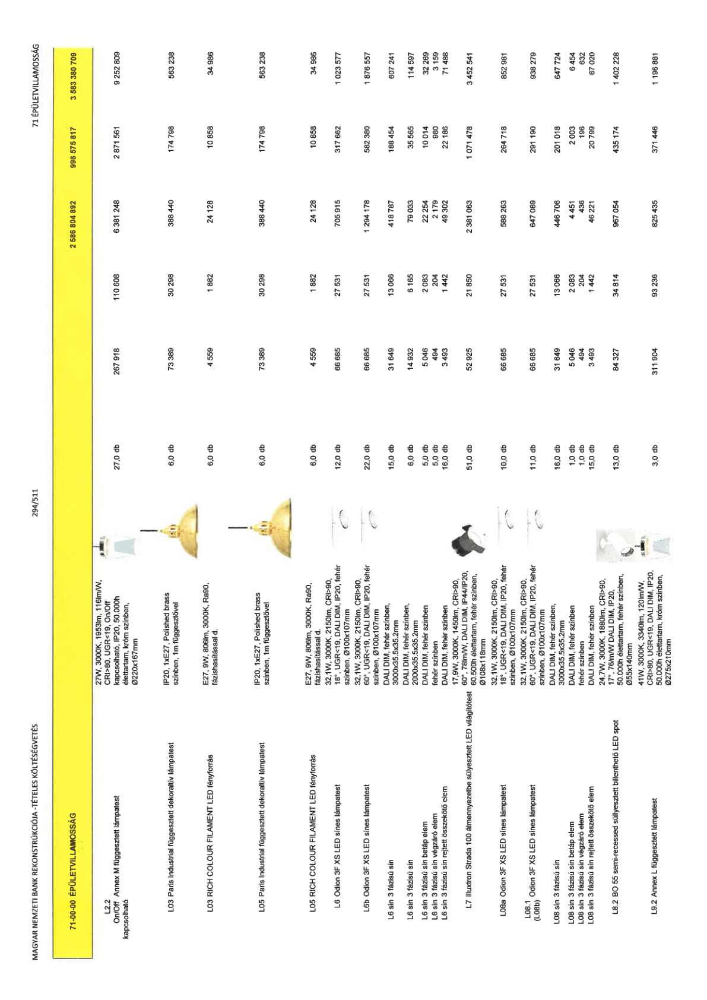

| Tétel | Menny. | Egys. | Anyag e.ár (net HUF) | Díj e.ár (net HUF) | Anyag összesen (net HUF) | Díj összesen (net HUF) | Anyag+Díj összesen (net HUF) |
|---|---|---|---|---|---|---|---|
| 71-00-00 ÉPÜLETVILLAMOSSÁG | NaN | NaN | 0 | 0 | 2 586 804 892 | 996 575 817 | 3 583 380 709 |
| 27W, 3000K, 1953lm, 116lm/W, CRI>80, UGR<19, On/Off kapcsolható, IP20, 50.000h élettartam, króm színben, Ø220x167mm | 0 | 0 | 0 | 0 | 0 | 0 | 0 |
| L2.2 On/Off Annex M függesztett lámpatest kapcsolható | 27,0 | db | 267 918 | 110 608 | 6 381 248 | 2 871 561 | 9 252 809 |
| IP20, 1xE27, Polished brass színben, 1m függesztővel | 0 | 0 | 0 | 0 | 0 | 0 | 0 |
| L03 Paris Industrial függesztett dekoratív lámpatest | 6,0 | db | 73 389 | 30 298 | 388 440 | 174 798 | 563 238 |
| E27, 9W, 806lm, 3000K, Ra90, fázishasítással d. | 0 | 0 | 0 | 0 | 0 | 0 | 0 |
| L03 RICH COLOUR FILAMENT LED fényforrás | 6,0 | db | 4 559 | 1 882 | 24 128 | 10 858 | 34 986 |
| IP20, 1xE27, Polished brass színben, 1m függesztővel | 0 | 0 | 0 | 0 | 0 | 0 | 0 |
| L05 Paris Industrial függesztett dekoratív lámpatest | 6,0 | db | 73 389 | 30 298 | 388 440 | 174 798 | 563 238 |
| E27, 9W, 806lm, 3000K, Ra90, fázishasítással d. | 0 | 0 | 0 | 0 | 0 | 0 | 0 |
| L05 RICH COLOUR FILAMENT LED fényforrás | 6,0 | db | 4 559 | 1 882 | 24 128 | 10 858 | 34 986 |
| 32,1W, 3000K, 2150lm, CRI>90, 18°, UGR<19, DALI DIM, IP20, fehér színben, Ø100x107mm | 0 | 0 | 0 | 0 | 0 | 0 | 0 |
| L6 Odion 3F XS LED sínes lámpatest | 12,0 | db | 66 685 | 27 531 | 705 915 | 317 662 | 1 023 577 |
| 32,1W, 3000K, 2150lm, CRI>90, 60°, UGR<19, DALI DIM, IP20, fehér színben, Ø100x107mm | 0 | 0 | 0 | 0 | 0 | 0 | 0 |
| L6b Odion 3F XS LED sínes lámpatest | 22,0 | db | 66 685 | 27 531 | 1 294 178 | 582 380 | 1 876 557 |
| DALI DIM, fehér színben, 3000x35.5x35.2mm | 0 | 0 | 0 | 0 | 0 | 0 | 0 |
| L6 sín 3 fázisú sín | 15,0 | db | 31 649 | 13 066 | 418 787 | 188 454 | 607 241 |
| DALI DIM, fehér színben, 2000x35.5x35.2mm | 0 | 0 | 0 | 0 | 0 | 0 | 0 |
| L6 sín 3 fázisú sín | 6,0 | db | 14 932 | 6 165 | 79 033 | 35 565 | 114 597 |
| DALI DIM, fehér színben | 0 | 0 | 0 | 0 | 0 | 0 | 0 |
| L6 sín 3 fázisú sín betáp elem | 5,0 | db | 5 046 | 2 083 | 22 254 | 10 014 | 32 269 |
| DALI DIM, fehér színben | 0 | 0 | 0 | 0 | 0 | 0 | 0 |
| L6 sín 3 fázisú sín végzáró elem | 5,0 | db | 494 | 204 | 2 179 | 980 | 3 159 |
| DALI DIM, fehér színben | 0 | 0 | 0 | 0 | 0 | 0 | 0 |
| L6 sín 3 fázisú sín rejtett összekötő elem | 16,0 | db | 3 493 | 1 442 | 49 302 | 22 186 | 71 488 |
| 17,9W, 3000K, 1450lm, CRI>90, 60°, 78lm/W, DALI DIM, IP44/IP20, 60.500h élettartam, fehér színben, Ø108x118mm | 0 | 0 | 0 | 0 | 0 | 0 | 0 |
| L7 Illuxtron Strada 100 álmennyezetbe süllyesztett LED világítótest | 51,0 | db | 52 925 | 21 850 | 2 381 063 | 1 071 478 | 3 452 541 |
| 32,1W, 3000K, 2150lm, CRI>90, 18°, UGR<19, DALI DIM, IP20, fehér színben, Ø100x107mm | 0 | 0 | 0 | 0 | 0 | 0 | 0 |
| L08a Odion 3F XS LED sínes lámpatest | 10,0 | db | 66 685 | 27 531 | 588 263 | 264 718 | 852 981 |
| 32,1W, 3000K, 2150lm, CRI>90, 60°, UGR<19, DALI DIM, IP20, fehér színben, Ø100x107mm | 0 | 0 | 0 | 0 | 0 | 0 | 0 |
| L08.1 (L08b) Odion 3F XS LED sínes lámpatest | 11,0 | db | 66 685 | 27 531 | 647 089 | 291 190 | 938 279 |
| DALI DIM, fehér színben, 3000x35.5x35.2mm | 0 | 0 | 0 | 0 | 0 | 0 | 0 |
| L08 sín 3 fázisú sín | 16,0 | db | 31 649 | 13 066 | 446 706 | 201 018 | 647 724 |
| DALI DIM, fehér színben | 0 | 0 | 0 | 0 | 0 | 0 | 0 |
| L08 sín 3 fázisú sín betáp elem | 1,0 | db | 5 046 | 2 083 | 4 451 | 2 003 | 6 454 |
| fehér színben | 0 | 0 | 0 | 0 | 0 | 0 | 0 |
| L08 sín 3 fázisú sín végzáró elem | 1,0 | db | 494 | 204 | 436 | 196 | 632 |
| DALI DIM, fehér színben | 0 | 0 | 0 | 0 | 0 | 0 | 0 |
| L08 sín 3 fázisú sín rejtett összekötő elem | 15,0 | db | 3 493 | 1 442 | 46 221 | 20 799 | 67 020 |
| 24,7W, 3000K, 1880lm, CRI>90, 17°, 76lm/W DALI DIM, IP20, 50.000h élettartam, fehér színben, Ø55x140mm | 0 | 0 | 0 | 0 | 0 | 0 | 0 |
| L8.2 BO 55 semi-recessed süllyesztett billenthető LED spot | 13,0 | db | 84 327 | 34 814 | 967 054 | 435 174 | 1 402 228 |
| 41W, 3000K, 3340lm, 120lm/W, CRI>80, UGR<19, DALI DIM, IP20, 50.000h élettartam, króm színben, Ø275x210mm | 0 | 0 | 0 | 0 | 0 | 0 | 0 |
| L9.2 Annex L függesztett lámpatest | 3,0 | db | 311 904 | 93 236 | 825 435 | 371 446 | 1 196 881 |
